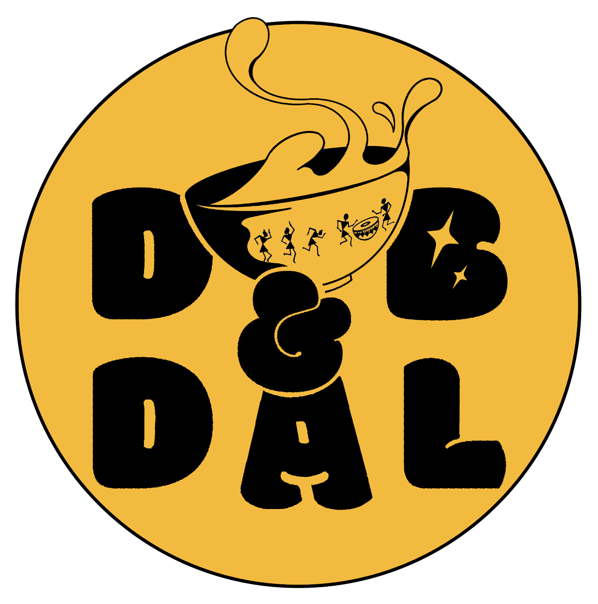
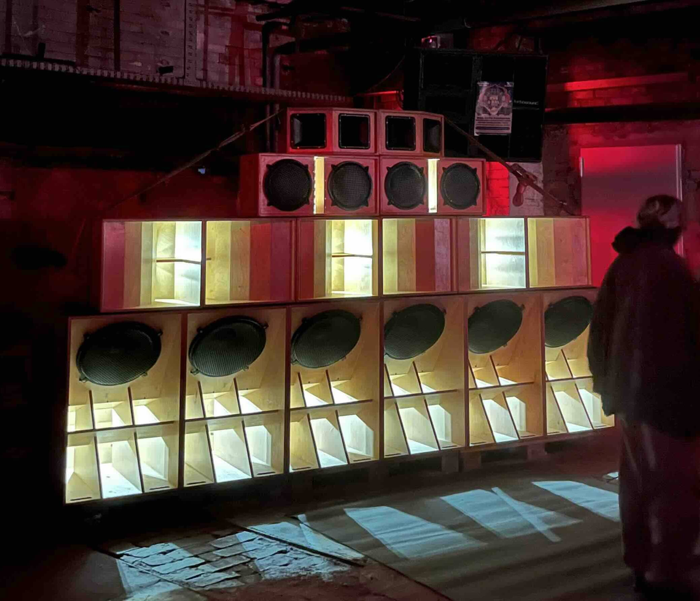
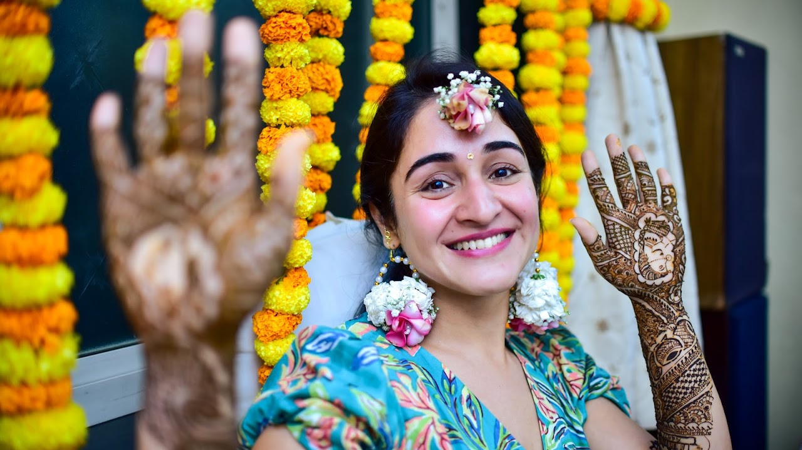
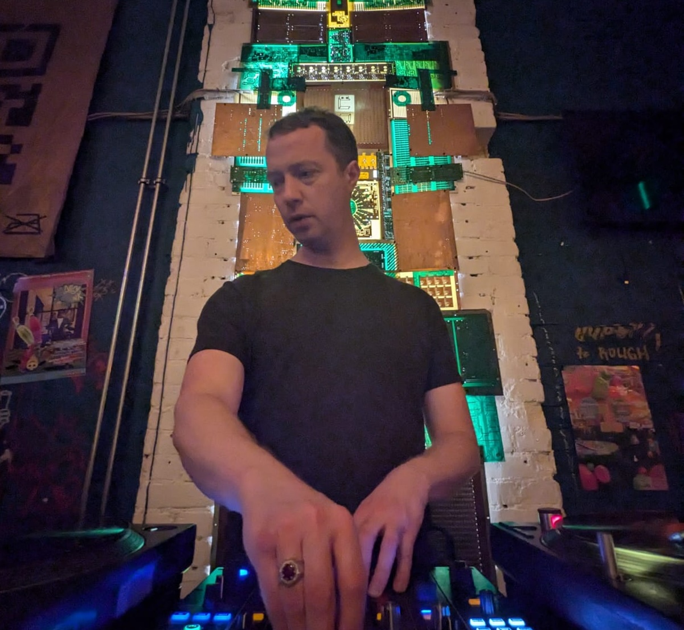

Food is communal. It's at the centre of festivals, holidays, celebrations and rituals since ancient times. At Dub & Dal, we all eat the same food, smell the same flavors, and feel that same warmth inside us. It softens the atmosphere: people look at each other, smile, and talk while eating, whether they're old friends or meeting for the first time. And sharing Indian food is more than a meal; it's a way of telling our stories and honoring our roots.
The culture around soundsystems, with the big stacks, dubplate exclusivity, and a lot of macho energy, is overwhelmingly male-dominated. On the other hand, the modern bass music scene is much more diverse, but often disconnected from the warmth of soundsystems and the roots of the music, reggae, dub. Dub & Dal grew out of wanting to bridge that gap. To build a space for soundsystem culture that is diverse, honours its roots, and still carries the same welcoming vibe of home.


